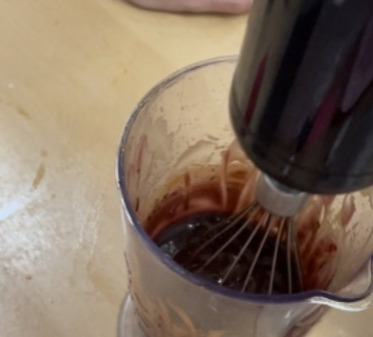
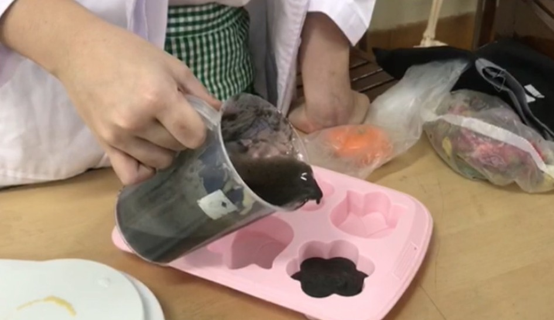

3.2.2 Prosedur Kerja Pembuatan Sabun Ekoenzim (Percobaan Pertama)
| No. |
Langkah Kerja Pembuatan Sabun Ekoenzim(Percobaan Pertama) |
Foto Langkah Kerja |
| 1. |
Menyiapkan alat dan bahan. Tidak lupa untuk memakai masker dan sarung tangan untuk menjaga sterilitas. |
 |
| 2. |
Memasukkan olive oil dan minyak kelapa ke dalam satu wadah. Mengaduk kedua cairan tersebut menggunakan blender sampai merata. |
 |
| 3. |
Memasukkan lye solution ke dalam campuran olive oil dan minyak kelapa lalu aduk sampai merata. |
 |
| 4. |
Memasukkan Ekoenzim ke dalam campuran lye solution dan olive oil. Aduk sampai merata |
 |
| 5. |
Membagi cairan yang sudah tercampur rata ke dalam dua wadah yang berbeda (nantinya akan menjadi dua layer) |
 |
| 6. |
Memasukkan charcoal ke dalam campuran lye solution dan olive oil yang akan menjadi layer pertama. |
 |
| 7. |
Memasukkan charcoal ke dalam layer pertama. Kemudian, mengaduk sampai merata. Memasukkan campuran ke dalam cetakan. |
 |
| 8. |
Memasukkan layer kedua (yang tidak diberi arang) ke dalam cetakan (di atas layer pertama). |
 |